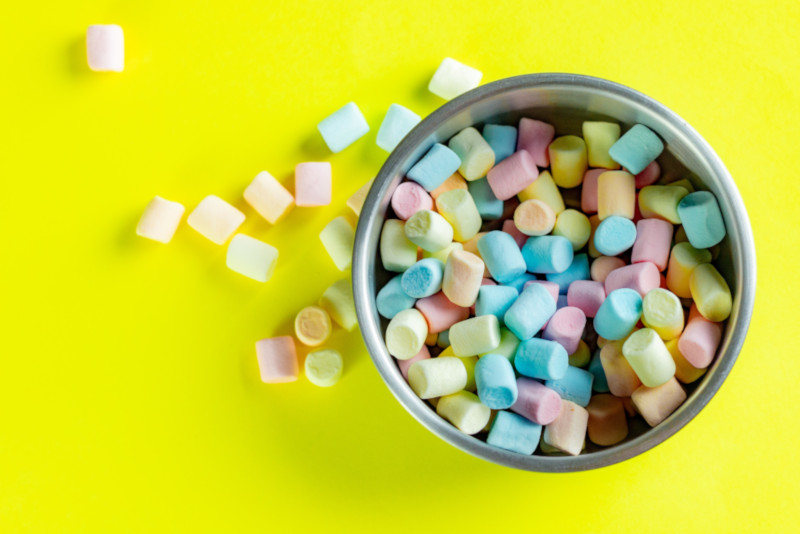

Несолодко про солодке: цукрозамінники
Які бувають підсолоджувачі?
Як підсолоджувачі використовують речовини, що мають виражений солодкий смак, нижчу ніж у цукру та глюкози калорійність та глікемічний індекс.
Серед підсолоджувачів природного походження , одним з найпопулярніших є фруктоза . І це невеликою мірою може бути виправдано для людей з діабетом, адже фруктоза солодша за цукор в 1,7 разів та має приблизно в 3 рази нижчий глікемічний індекс. Однак таку ж калорійність!
Треба зважати, що метаболізм фруктози істотно відрізняється від глюкозного. При цьому не відбувається активації синтезу гормонів насичення (лептин). Тому коли ми з'їдаємо два тістечка із справжнім цукром, у нас працьовує "глюкозний стоп-кран" – ми відчуваємо, що забагато. Тістечка на фруктозі такого ефекту не матимуть і сприйматимуться нашими системами як щось лайтове. Те ж саме з фруктами – ними доволі важко справді наїстися, хоч по калорійності вони часом огого! Окрім того, всмоктування фруктози доволі обмежене: при надмірному споживанні це може виливатися у дискомфорт в животі та діарею. Надмірне споживання фруктози асоційоване із численними матаболічними порушеннями.
Іншою групою підсолоджувачів природного походження є б агатоатомні спирти – сорбітол, ксилітол, мальтітол, манітол, еритрол, тощо. Вони мають порівняно помірний ступінь солодкості і переважно застосовуються у комбінаціях. Вони також грають роль у підтримці продуктами вологості, текстури та об'єму. Впливають на збереження продуктів та стабільність кольору. Тому часто фігурують навіть не як підсолоджувачі, а як інші харчові добавки. Багатоатомні спирти мають нижчу енергетичну цінність, бо не можуть повністю перетравитися. У процесі їх деградації в нашому організмі утворюються коротколанцюгові жирні кислоти (що наче не зле) і гази (що вже трохи гірше). Глікемічний індекс у них також невисокий, що робить їх постійними гостями на етикетках діабетичних продуктів. Деякі з них навіть розглядаються як пребіотики чи протикарієсні агенти та володіють послаблюючою дією.
Яскравим персонажем у світі підсолоджувачів є стевіозид . Він у 200 разів солодший за цукор, не впливає на глікемічний індекс та не здійснює вкладу у калорійність нашого харчування. Отриманий із рослини, що називається стевією. Стевія – чагарник та родич наших айстр, що погодить із східного Парагваю, має у своєму складі кілька десятків глікозидів із солодким смаком, найвідоміші з яких стевіозид і ребаудіозид. Власне вони стали золотою жилою для багатьох плантаторів з усього світу і зараз стевія промислово вирощується не лише у Південній Америці, а й у Китаї, Кореї, Таіланді, Індонезії, Малазії, Греції та навіть Ізраїлі. Хімічна промисловість не відстає і також приносить на ринок тони синтетичного стевіозиду. Підозріла прекрасність стевіозиду ще й у тому, що він володіє антигіпертензивними властивостями. І поки що у стевіозиду таки доволі бездоганна репутація.
Ще один цікавий "натуральний" підсолоджувач – тауматин . Це білковий компонент, що у дві тисячі разів солодший за цукор. Тауматин екстрагований із тропічної рослини Thaumatococcus daniellii. У штатах він хоч і не зареєстрований як підсолоджувач, однак також схвалений, правда, як підсилювач смаку.
На сьогодні також існує і чимало синтетичних підсолоджувачів – цикламат, аспартам, сахарин, цукралоза, ацесульфам калію, тощо. Їх широке застосуванням викликає постійні дискусії з приводу безпечності. Нові і нові дослідження рухають ці дискусії то в одну, то в іншу сторону.
Наприклад, цикламат. Саме з нього почалося підозріле ставлення до цукрозамінників, бо цикламату було висунуто підозру в канцерогенності. І хоч ці підозри в епідеміологічних дослідженнях не підтвердилися, як то кажуть, "осадачек астался". Сьогодні цикламат заборонений у великому переліку країн.
У США підсолоджувачі вважаються безпечними та використовуються – аспартам, сахарин, цукралоза, неотам, ацесульфам-К і стевія . Нщодавно до цього переліку додано екстракт архату (Siraitia grosvenorii) і адвантам.
Чому підсолоджувачі – трохи сумнівне рішення?
Без особливого перебільшення, надпис на упаковці "не містить цукру" – сьогодні є популярним маркетиговим ходом. І у розуміючого споживача таке маркування викликає справедливий інтерес зазирнути у той дрібний шрифт на звороті упаковки та з'ясувати в чому "зрада".
Як вже було згадано, споживання продуктів із підсолоджувачами може не давати відчуття насичення, ми їмо солодке і "стоп-кран" не спрацьовує;
Також замість того, щоб відвикати від надто солодких смаків, ми навпаки можемо ще більше до них звикати та прагнути ще солодшого;
Іноді спрацьовує також так звана "цукрозамінникова індульгенція" – ми дозволяємо собі більше, бо ж "без цукру". Натомість часто отримуємо зайві порції насичених жирів та інших не надто цінних для нашого організму компонентів.
Цікаві дослідження на прикладі сахарину, опубліковані в Nature показали, що споживання цукрозамінників може сприяти розвитку глюкозної інтолерантності та метаболічного синдрому . І не просто якось там, а шляхом впливу на склад кишкової мікробіоти. При чому так, що в інших мишей, яким пересадили змінену мікробіоту, але яких вже не годували сахарином, теж розвивались ці симптоми.
Тому ймовірно, що згодом перелік рекомендованих FDA підсолоджувачів може змінюватися.
Деяке занепокоєння викликає застосування цукрозамінників у вразливих груп людей – вагітних та годуючих жінок, дітей та людей із мігренями та епілепсією. Вони найвразливіші до можливих побічних ефектів цукрозамінників.
Зокрема говориться про ймовірний зв'язок вживання штучних цукрозамінників під час вагітності на підвищення ризиків передчасних пологів.
Деякі дослідники також вказують на те, що аспартат може виступати тригероммігреней.
Аспартат також протипоказаний для вживання пацієнтам із фенілкетонурією.
Також говорять про те, що штучні підсолоджувачі взагалі не повинні бути присутні в раціоні дітей до 2 років і їх вживання має бутиобмеженим під час вагітності та лактації.

Photo by Quiony Navarro on Unsplash